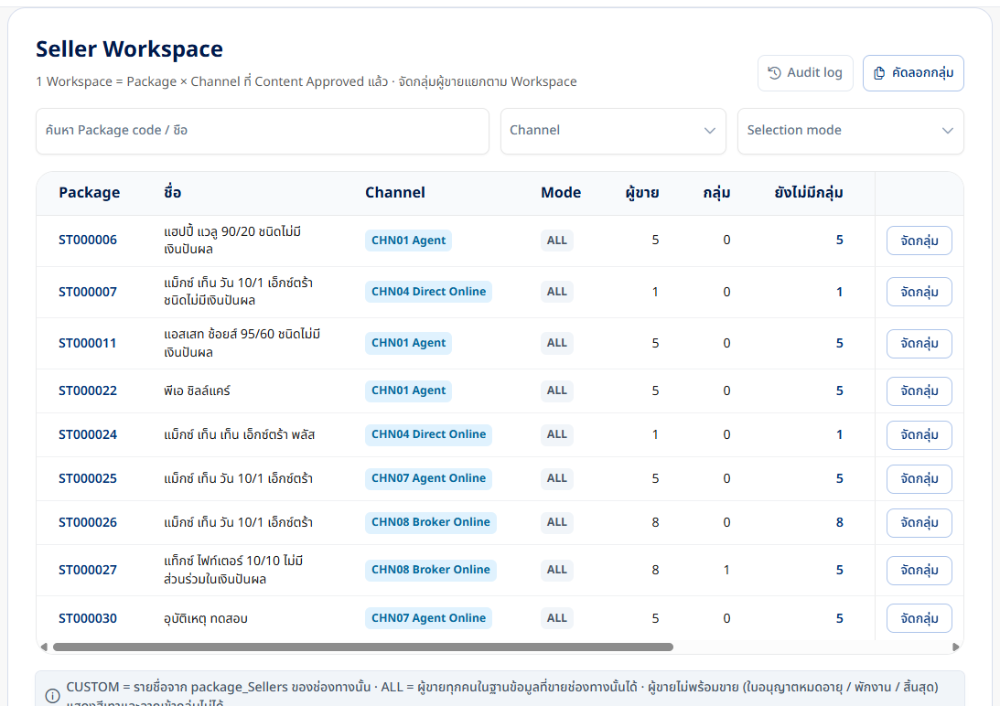
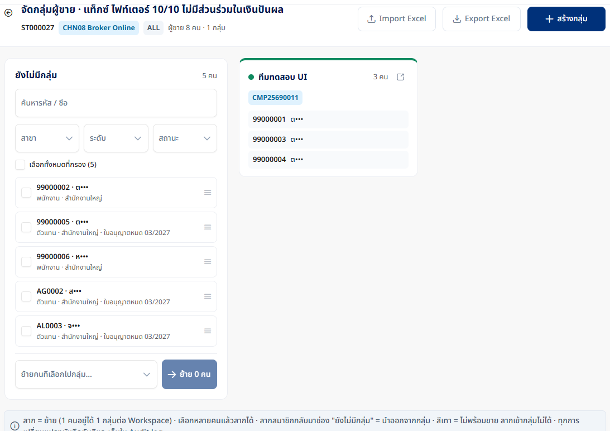
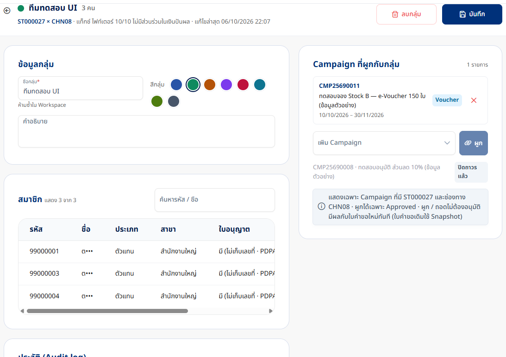
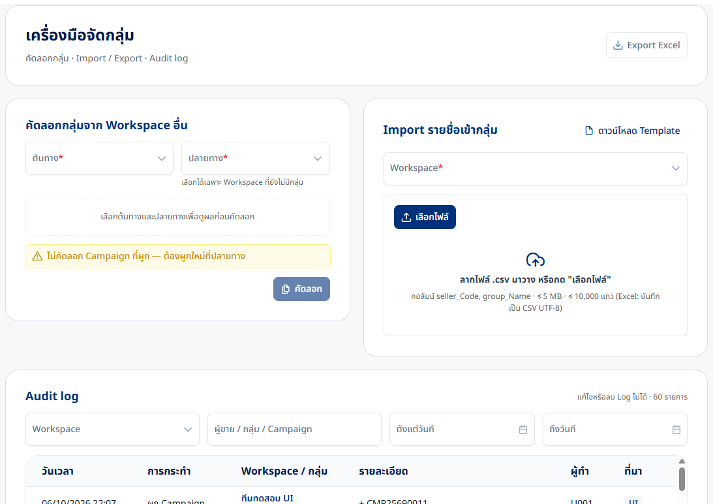
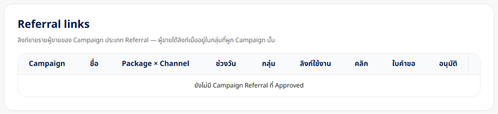

เมนู Seller ต่อ Tesla Admin API
สรุปงานและผลทดสอบ · กลุ่มผู้ขาย · ผูก Campaign · คัดลอก / Import / Audit · (รวมงานเช้า: ประเภท Campaign จาก Tesla)
6 ต.ค. 2569 (ค่ำ) · DEV (TESLA_ADMIN) · ทดสอบ API + หน้าจอจริง
30/30ทดสอบ API บน DEV
7/7ทดสอบผ่านหน้าจอ
727/727unit test · ใหม่ 25 (Seller)
14เส้น API ใหม่ /api/v2/people
V0384 ตาราง · ลง DEV แล้ว
สิ่งที่ตัดสินใจ (ข้อ 1–5 ตามที่อนุญาต)
| # | เรื่อง | ที่ทำ |
|---|---|---|
| 1 | ขอบเขตรอบแรก | กลุ่มผู้ขายครบ (Workspace · Board · ย้าย · รายละเอียดกลุ่ม · ผูก Campaign · คัดลอก · Import · Audit) · Referral แสดงรายการลิงก์ได้ แต่ยอดคลิก / ใบคำขอ / กรมธรรม์ = 0 (ยังไม่มีแหล่งข้อมูล) |
| 2 | Migration | V038__add_seller_group.sql + rollback · ลง DEV แล้ว (ได้รับอนุญาต) · ยังไม่ผ่าน DBA review |
| 3 | ข้อมูลส่วนบุคคล | ไม่เก็บ / ไม่ส่ง เบอร์โทร · อีเมล · เลขใบอนุญาต (null เสมอ) · ใช้แค่วันหมดอายุใบอนุญาต · หน้าจอเขียน "มี (ไม่เก็บเลขที่ · PDPA)" · รูปในรายงานปิดชื่อผู้ขาย |
| 4 | พนักงาน (EMPLOYEE) | ใช้ M_AGENT อย่างเดียว: Agent / Broker = ตัวแทน (ต้องมีใบอนุญาต) · Direct / Marketer = พนักงาน (ไม่ต้องมี) — รอ BA ยืนยัน ว่าพนักงานขายมาจากระบบไหน |
| 5 | กลุ่ม ↔ Campaign | เก็บการผูกอย่างเดียว (D-03 ไม่ต้องอนุมัติ) · ยังไม่ใช้คำนวณสิทธิ์ |
กติกาที่ใช้หา "ผู้ขายของ Workspace"
- Workspace = Package × ช่องทาง ที่มี Content Approved / Published (แหล่งเดียวกับตัวเลือก Package ของ Campaign)
- โหมด จาก GIO (
T_PACKAGE.gio_payload→package_Channels[].seller_Selection_Mode) — DEV ทุก Workspace เป็น ALL - ALL: ตัวแทนที่
AGENT_TYPEหรือช่องทางขายที่ ACTIVE ในT_AGENT_CHANNELเป็นคำหนึ่งในชื่อช่องทาง — "Agent Online" ← Agent · "Broker Online" ← Broker · "Direct Online" ← Direct - CUSTOM: เฉพาะรหัสใน
package_Sellers(เทียบรหัสตัวแทน หรือรหัสขายรายช่องทาง) · รหัสที่ไม่พบใน M_AGENT แสดงเป็น "ไม่พบข้อมูลตัวแทน (Porsche)" - พร้อมขาย = Active และ (ตัวแทน) ใบอนุญาตยังไม่หมดอายุ · เตือนเมื่อหมดภายใน 30 วัน · ไม่พร้อมขายลากเข้ากลุ่มไม่ได้
- สมมติฐาน การจับคู่ชื่อช่องทาง Porsche ↔ CHN0x ใช้คำในชื่อ — ควรให้ BA ยืนยัน หรือทำตาราง mapping
สิ่งที่สร้าง
BE Tesla Admin API (254a06f)
SellerV2Controller/api/v2/people: workspaces · board · groups (สร้าง / แก้ / ลบ) · move · import · bind / unbind · referrals · copy · auditSellerV2Service+SellerV2Rules(กติกาเดียวกับ Mock prototype) ·SellerV2Repository— ทุกการเขียนหลายแถวอยู่ใน transaction เดียวกับ Audit- V038:
T_SELLER_GROUP(ชื่อห้ามซ้ำใน Workspace · ลบแบบ soft) ·_MEMBER(1 คน 1 กลุ่มต่อ Workspace) ·_CAMPAIGN·T_SELLER_AUDIT_LOG(เพิ่มได้อย่างเดียว) - คัดลอกกลุ่มกันชนกันด้วย advisory lock · ชื่อซ้ำจับจาก unique index → 409
FE TESLA Management v2 (ee2603a)
- 14 route
/api/people/*→ Tesla ·/api/peopleเป็นเส้นของ Tesla (ไม่ตกไป Mock) dateTime()อ่านเวลา ISO ของ API v2 ได้ (เดิมแสดงเพี้ยน)- คอลัมน์ใบอนุญาต: "มี (ไม่เก็บเลขที่ · PDPA)" แทนการเขียน "ไม่ต้องมี" ผิด ๆ
- สคริปต์
test_seller_api.py(30 กรณี · เก็บกวาดเอง) +mask-names.jsปิดชื่อก่อนถ่ายรูป
ผลทดสอบ API บน DEV (30/30)
Workspace ทดสอบ ST000027×CHN08 · ปลายทางคัดลอก ST000026×CHN08 · รันเมื่อ 2026-10-06 22:05 · กลุ่มทดสอบ "ทดสอบ-…" ถูกลบหลังจบ (ประวัติยังอยู่)
| # | กรณี | ผลที่ได้ | ผล |
|---|---|---|---|
| SL-01 | รายการ Workspace | 9 Workspace · ST000006×CHN01:5 คน/ALL, ST000007×CHN04:1 คน/ALL, ST000011×CHN01:5 คน/ALL, ST000022×CHN01:5 คน/ALL, ST000024×CHN04:1 คน/ALL, ST000025×CHN07:5 คน/ALL, ST000026×CHN08:8 คน/ALL, ST000027×CHN08:8 คน/ALL, ST000030×CHN07:5 คน/ALL | ผ่าน |
| SL-02 | กรองช่องทาง CHN07 | 2 รายการ | ผ่าน |
| SL-03 | Board ST000027×CHN08 | ผู้ขาย 8 คน · พร้อมขาย 8 · ประเภท ['AGENT', 'EMPLOYEE'] | ผ่าน |
| SL-04 | ไม่มีเบอร์ / อีเมล / เลขใบอนุญาต (PDPA) | ทุกคนเป็น null | ผ่าน |
| SL-05 | Workspace ที่ไม่มี → 404 | ไม่พบ Workspace NOPE × CHN08 (ต้องมี Content Approved) | ผ่าน |
| SL-06 | สร้างกลุ่ม | groupId 15 | ผ่าน |
| SL-07 | ชื่อซ้ำ → 409 | ชื่อกลุ่ม "ทดสอบ-ทีม A" มีอยู่แล้วใน Workspace นี้ | ผ่าน |
| SL-08 | ชื่อว่าง → 400 | กรุณากรอกชื่อกลุ่ม | ผ่าน |
| SL-09 | ย้ายเข้ากลุ่ม (+ รหัสที่ไม่อยู่ใน Workspace) | ย้าย 2 · ข้าม [('NO••01', 'ไม่อยู่ในรายชื่อ Workspace')] | ผ่าน |
| SL-10 | Board หลังย้าย | สมาชิกในกลุ่ม 2 คน | ผ่าน |
| SL-11 | นำออกจากกลุ่ม | 1 คนกลับเป็น ยังไม่มีกลุ่ม | ผ่าน |
| SL-12 | ไม่ได้เลือกผู้ขาย → 400 | ยังไม่ได้เลือกผู้ขาย | ผ่าน |
| SL-13 | แก้ชื่อ / สี | แก้ไข ชื่อ "ทดสอบ-ทีม A" → "ทดสอบ-ทีม A1", คำอธิบาย, สี #1f8a4c → #c2610c | ผ่าน |
| SL-14 | แก้เป็นชื่อซ้ำ → 409 | ชื่อกลุ่ม "ทดสอบ-ทีม B" มีอยู่แล้วใน Workspace นี้ | ผ่าน |
| SL-15 | Campaign ที่ผูกได้ / ไม่ได้ | 2 Campaign ครอบคลุม ST000027×CHN08 · ผูกได้ 1 · CMP25690008:ปิดถาวรแล้ว, CMP25690011:ผูกได้ | ผ่าน |
| SL-16 | ผูก CMP25690011 | อยู่ในรายการผูกแล้ว | ผ่าน |
| SL-16b | ถอด CMP25690011 แล้วผูกใหม่ | ถอดแล้วไม่เหลือ · ผูกใหม่ได้ (ใช้ต่อในการลบกลุ่ม) | ผ่าน |
| SL-17 | ผูก CMP25690008 (ปิดถาวรแล้ว) → 400 | ผูกได้เฉพาะ Campaign ที่ Approved และยังไม่หมดอายุ | ผ่าน |
| SL-18 | Campaign ที่ไม่มี → 404 | ไม่พบ Campaign CMP00000000 | ผ่าน |
| SL-19 | Import ตรวจอย่างเดียว | แถว 2: ผ่าน · สร้างกลุ่มใหม่ · แถว 3: รหัสซ้ำในไฟล์ · แถว 4: ไม่พบรหัสใน Workspace · แถว 5: ข้อมูลไม่ครบ | ผ่าน |
| SL-20 | Import บันทึก → สร้างกลุ่มใหม่ | กลุ่ม ทดสอบ-ทีม C สมาชิก 1 | ผ่าน |
| SL-21 | คัดลอก (Preview) → ST000026×CHN08 | ทดสอบ-ทีม A1: 1/1 · ทดสอบ-ทีม B: 0/0 · ทดสอบ-ทีม C: 1/1 | ผ่าน |
| SL-22 | คัดลอกเข้า Workspace เดียวกัน → 400 | ต้นทางและปลายทางต้องเป็นคนละ Workspace | ผ่าน |
| SL-23 | คัดลอกจริง แล้วคัดลอกซ้ำ → 409 | คัดลอกได้เฉพาะเข้า Workspace ที่ยังไม่มีกลุ่ม | ผ่าน |
| SL-24 | Audit log | 23 แถว · ['BIND', 'COPY', 'CREATE_GROUP', 'DELETE_GROUP', 'IMPORT', 'MOVE', 'UNBIND', 'UPDATE_GROUP'] | ผ่าน |
| SL-25 | ค้นหา Audit (q) | 10 แถว | ผ่าน |
| SL-26 | Referral links | 0 Campaign Referral ที่ Approved (ยอดคลิก = 0: ยังไม่มีแหล่งข้อมูล) | ผ่าน |
| SL-27 | ลบกลุ่ม (ถอด Campaign + สมาชิกกลับเป็น ยังไม่มีกลุ่ม) | ไม่พบกลุ่ม (อาจถูกลบแล้ว) | ผ่าน |
| SL-28 | ประวัติกลุ่มที่ลบยังอยู่ | DELETE_GROUP · UNBIND · BIND · UNBIND · BIND · UPDATE_GROUP · MOVE · MOVE · MOVE · CREATE_GROUP | ผ่าน |
| SL-29 | เก็บกวาดกลุ่มทดสอบ | ไม่เหลือกลุ่มทดสอบใน 2 Workspace | ผ่าน |
ผลทดสอบผ่านหน้าจอ (7/7)
| # | กรณี | ผลที่ได้ | ผล |
|---|---|---|---|
| UI-01 | Workspace list จาก Tesla | 9 Workspace · จำนวนผู้ขาย / กลุ่ม / ยังไม่มีกลุ่ม ตรงกับ API | ผ่าน |
| UI-02 | Board ST000027 × CHN08 | ผู้ขาย 8 คนจาก M_AGENT · โหมด ALL · ประเภทตัวแทน / พนักงาน · วันหมดใบอนุญาต | ผ่าน |
| UI-03 | สร้างกลุ่ม "ทีมทดสอบ UI" (สีเขียว) | การ์ดกลุ่มขึ้นทันที | ผ่าน |
| UI-04 | เลือก 3 คน → วางเข้ากลุ่ม | toast "ย้าย 3 คนไปกลุ่ม…แล้ว" · ยังไม่มีกลุ่ม 8 → 5 | ผ่าน |
| UI-05 | รายละเอียดกลุ่ม → ผูก CMP25690011 | toast "ผูก Campaign แล้ว" · CMP25690008 แสดงเหตุผล "ปิดถาวรแล้ว" | ผ่าน |
| UI-06 | วันที่ "แก้ไขล่าสุด" | พบบั๊กรูปแบบวันที่ (ISO จาก API v2) → แก้ dateTime() แล้วแสดง 06/10/2026 22:07 | ผ่าน |
| UI-07 | เครื่องมือ / Audit log · Referral links | Audit แสดงทุก action ของวันนี้ · Referral: ยังไม่มี Campaign Referral ที่ Approved | ผ่าน |
รูปหน้าจอ





งานเช้า–บ่ายวันนี้ (สรุป)
| งาน | ผล | Commit |
|---|---|---|
| ปิด Campaign ถาวร + คืน Stock | DEV 11/11 · คู่มือ 1.2 · รายงาน 16 | BE fd73075 · FE 499f37c |
| ประเภท Campaign (MS-01) จาก Tesla · ลบ KEEP_LOCAL | Wizard 9 การ์ด (ไม่มี RIDER) · ตัวกรองรายการ · 702/702 | BE 300eba2 · FE 5ad1aa7 |
| เมนู Seller บน Tesla (รายงานนี้) | API 30/30 · หน้าจอ 7/7 · 727/727 | BE 254a06f · FE ee2603a |
สถานะข้อมูลบน DEV
| V038 | 4 ตารางใหม่ (ลงแล้ว) · rollback = V038__rollback.sql |
| กลุ่ม "ทีมทดสอบ UI" | ST000027 × CHN08 · สมาชิก 3 คน · ผูก CMP25690011 — ทิ้งไว้ให้ดูพรุ่งนี้ (ลบได้ที่หน้ารายละเอียดกลุ่ม) |
| กลุ่ม "ทดสอบ-…" | ลบแล้ว (soft delete) · Audit ยังอยู่ใน T_SELLER_AUDIT_LOG |
ข้อจำกัด / งานต่อ
- ตัดสินใจ ชื่อช่องทาง Porsche (Bancassurance / Broker / Direct) ↔ CHN0x — ตอนนี้เทียบคำในชื่อ
- ตัดสินใจ พนักงานขาย (EMPLOYEE) มาจากไหน — ตอนนี้ใช้ Direct / Marketer ใน M_AGENT
- Referral: ยังไม่มีแหล่งยอดคลิก / ใบคำขอ / กรมธรรม์ · ลิงก์เป็นแบบคำนวณ (ไม่เก็บ token)
- API ยังไม่ตรวจ Role (Seller Admin) — รวมในงาน "ตรวจ Role จาก UAM"
- V038 ต้องให้ DBA ตรวจก่อน merge เข้า
uat(เหมือน V035–V037) - การผูก Campaign กับกลุ่มยังไม่ถูกใช้ตอนคำนวณสิทธิ์ (รอบัญชีการแจกสิทธิ์)
- ข้อมูล M_AGENT บน DEV sync ล่าสุด 24/09/2026 (8 คน) — ถ้า Porsche เพิ่มคนต้อง sync ใหม่ (
POST /api/v1/agent/sync)